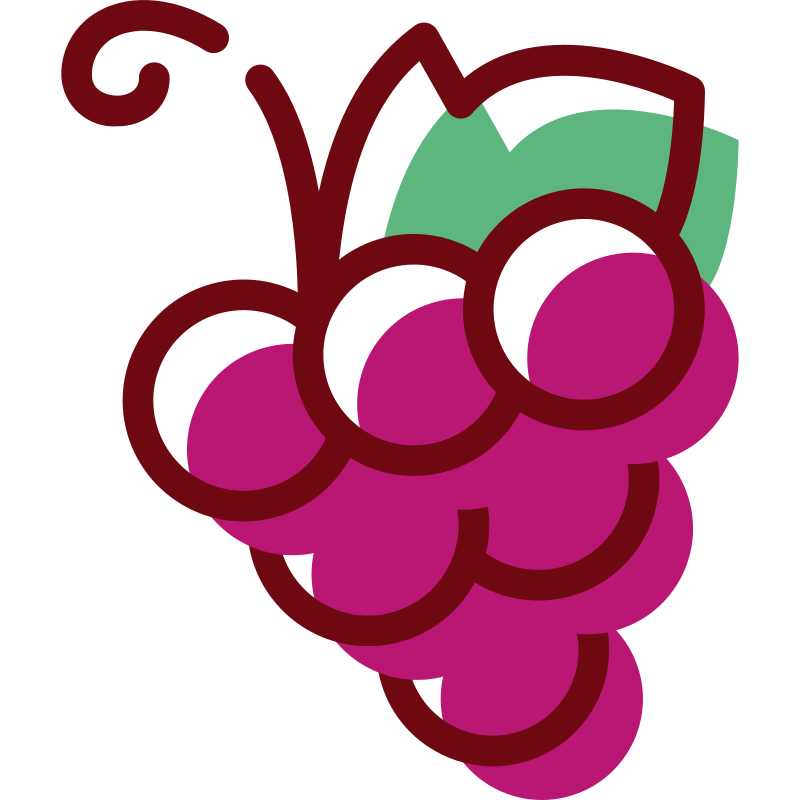
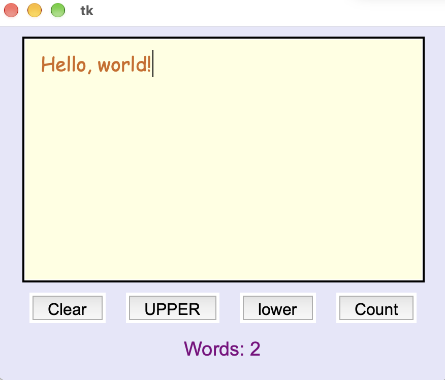
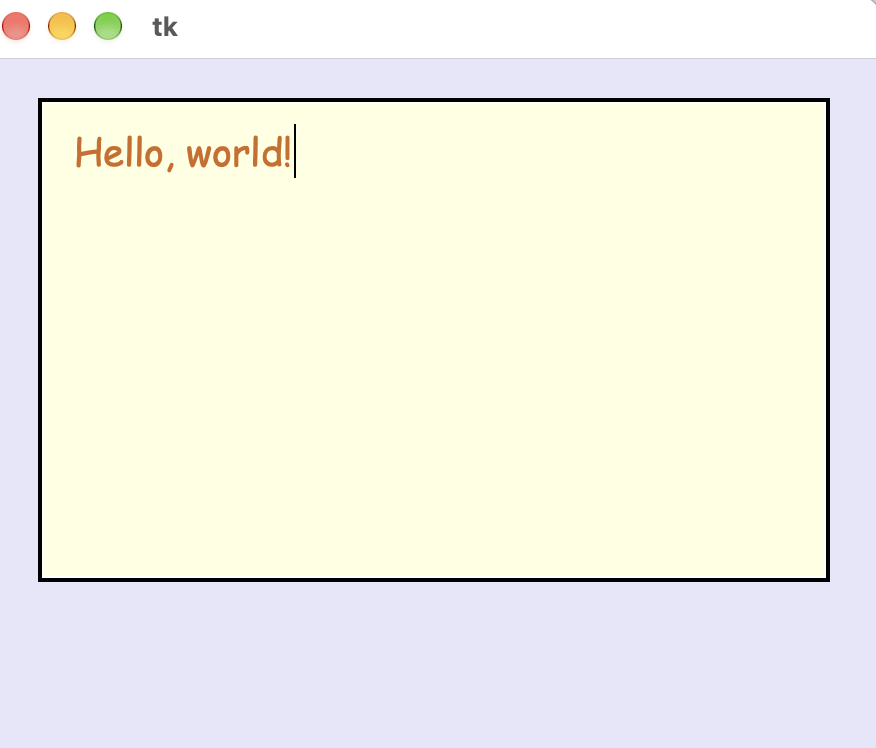
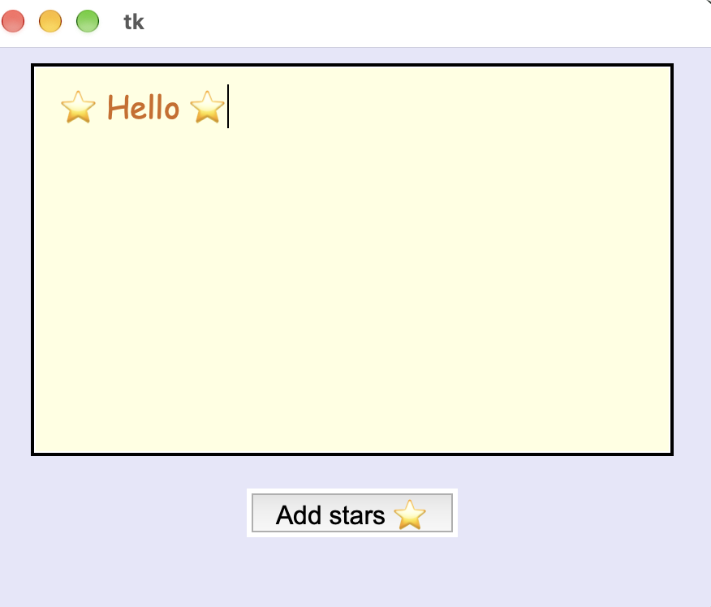
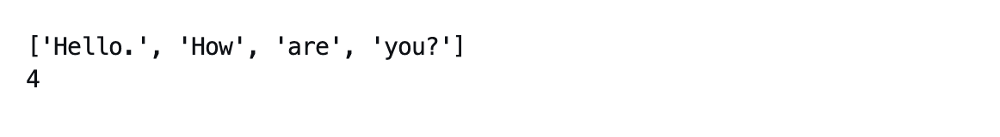

Повторення: Label, Button, Entry, Frame
Повторення: Label, Button, Entry, Frame
Завдання для повторення
1. Label та Button
- Створи напис із будь-яким текстом.
- Створи кнопку, при натисканні на яку змінюється колір тексту напису.
Очікування запуску...
2. Entry та Frame
- Створи напис "Name: ".
- Створи поле для введення тексту.
- Розмісти їх в один рядок (side=LEFT).
Очікування запуску...

Багаторядкове поле TextВступ
Сьогодні ми розглянемо, як створити багаторядкове текстове поле:

Починаємо як завжди зі створення головного вікна програми:
from tkinter import *
window = Tk()
window.geometry("450x350")
window.config(bg="lavender")
# тут додаємо всі віджети
window.eval("tk::PlaceWindow . center")
window.mainloop()Що таке Text
Entry вміщує лише один рядок. Якщо потрібно ввести більший текст (нотатку або повідомлення на кілька рядків), використовують віджет Text:
text = Text(
window,
font=("Comic Sans MS", 14),
width=30,
height=8,
wrap=WORD,
bg="lightyellow",
fg="chocolate",
padx=15,
pady=10,
)
text.pack(pady=10)- width=30 – ширина в символах (як і в Entry).
- height=8 – висота в рядках.
- wrap=WORD – якщо текст довгий, на новий рядок переноситься ціле слово, а не його частина.

Завдання 1
- Створи новий файл notes.py для сьогоднішніх завдань.
- Створи і налаштуй головне вікно програми window.
- Додай багаторядкове поле Text. Налаштуй його параметри: розмір, колір, внутрішні і зовнішні відступи.
Видалення тексту
Оскільки в Text багато рядків, початок тексту позначається як "1.0" (1-й рядок, 0-й символ), а кінець – END (або "end-1c" при читанні, щоб не захопити зайвий \n у кінці).
text.delete("1.0", END)Завдання 2
Створи кнопку Clear, яка очищає весь вміст поля.
Читання та зміна тексту
| Команда | Що робить |
|---|---|
| text.get("1.0", "end-1c") | повертає весь введений текст |
| text.delete("1.0", END) | видаляє весь текст |
| text.insert("1.0", "...") | вставляє текст на початок поля |
Щоб змінити текст у полі, виконуємо три кроки:
- get: читаємо текст, який там вже є, і зберігаємо його у змінну.
- delete: стираємо весь поточний вміст текстового поля.
- insert: редагуємо збережений раніше текст і додаємо його назад у текстове поле.
def add_stars():
# 1. get
content = text.get("1.0", "end-1c")
# 2. delete
text.delete("1.0", END)
# 3. insert
if content:
text.insert("1.0", f"⭐️ {content} ⭐️")
Завдання 3
- Створи ще дві кнопки: UPPER та lower. Перша має перетворювати всі літери в текстовому полі на великі, інша – маленькі (методи .upper() та .lower()).
- Розмісти всі три кнопки в один рядок.
Метод split()
Метод .split() розбиває текст за пробілами і повертає список з отриманими таким чином словами. І тоді ці слова можна порахувати.
message = "Hello. How are you?"
words = message.split()
print(words)
print(len(words))
Завдання 4
Додай четверту кнопку – Count – яка рахує кількість слів у полі Text і показує результат у Label (наприклад, "Words: 4").
Збереження нотатки у файл
Нотатки, які зникають після закриття програми, не дуже корисні. Щоб їх зберігати, потрібно дві речі: місце і назва для файлу (їх обирає користувач) і запис тексту у файл.
Вікно для вибору місця й назви файлу вміє показувати модуль filedialog. Його потрібно імпортувати окремо, бо рядок from tkinter import * його не підключає:
from tkinter import *
from tkinter import filedialogФункція asksaveasfilename() відкриває вікно «Зберегти як…» і повертає шлях до файлу, який обрав користувач:
filepath = filedialog.asksaveasfilename(
defaultextension=".txt",
filetypes=[("Text files", "*.txt"), ("All files", "*.*")],
)
print(filepath) # наприклад, C:/Users/Anna/Documents/my_note.txt- defaultextension: додає .txt до назви, якщо користувач сам його не написав.
- filetypes: список типів файлів у вікні. Кожен тип – це пара (опис, шаблон).
Якщо користувач закрив вікно або натиснув Cancel, функція поверне порожній рядок "". Тому перед записом треба перевірити, що шлях не порожній.
Як зберегти текст у файл:
if filepath:
with open(filepath, "w", encoding="utf-8") as f:
f.write(content)Тут "w" означає запис у файл, а encoding="utf-8" потрібен, щоб українські літери та емодзі записалися правильно. Блок with сам закриє файл після запису.
Як зупинити функцію, якщо немає що зберігати:
def save():
# ...
if not content.strip():
# тут можна змінити текст у Label
return
# далі пишемо код без elseЗавдання 5
Додай до програми п'яту кнопку – Save – яка зберігає текст з поля у файл. Місце і назву файлу користувач обирає у вікні filedialog.
Якщо тексту немає, на екрані має зʼявитися відповідне повідомлення ("Nothing to save"), і вікно вибору файлу не повинно відкриватися.
Якщо файл збережено, має вивестися повідомлення про успіх: "Saved!". Якщо користувач закрив вікно без збереження, файл не створюється і повідомлення про успіх не показується.
Перевірка: збережи текст двічі під різними назвами. Потім натисни Save ще раз і закрий вікно кнопкою Cancel. У папці мають бути два файли з правильним текстом.
 Кольори та шрифти
Кольори та шрифти
Таблиця кольорів:
| Базові кольори | Світлі (для фону) | Темні (для тексту) |
|---|---|---|
| "white" | "lightblue" | "darkblue" |
| "black" | "lightgreen" | "darkgreen" |
| "red" | "lightyellow" | "crimson" |
| "blue" | "lavender" | "purple" |
| "green" | "mistyrose" | "indigo" |
| "yellow" | "peachpuff" | "teal" |
| "orange" | "aliceblue" | "darkslateblue" |
| "pink" | "honeydew" | "chocolate" |
Таблиця шрифтів:
| Назва шрифту | Як виглядає |
|---|---|
| "Arial" | Чистий сучасний шрифт |
| "Verdana" | Широкий, легко читається |
| "Trebuchet MS" | Стильний м'який шрифт для заголовків |
| "Comic Sans MS" | Неформальний, схожий на комікс |
| "Georgia" | Елегантний книжковий шрифт |
| "Times New Roman" | Класичний шрифт |
| "Courier New" | Моноширинний (як друкарська машинка) |
| "Impact" | Дуже товстий шрифт |
 Домашнє завдання
Домашнє завдання
Завдання
1) Дай відповіді на питання:
1. Поле Text порожнє. Кнопка виконує команду text.insert("1.0", "Hi"). Що буде всередині поля, якщо натиснути цю кнопку двічі?
2. У полі написано "abc". Функція читає текст у змінну content, очищує поле і вставляє content.upper(). Що буде на екрані після натискання кнопки?
3. Яка помилка допущена в рядку: content = text.get("1.0")?
4. У якому порядку потрібно виконувати команди, щоб змінити текст у полі Text?
5. Яка позиція означає самий початок поля Text?
2) Допиши код:
Створи багаторядкове текстове поле, налаштуй для нього шрифт, ширину, висоту і перенос по словах та розмісти його у вікні. Додай під ним кнопку "Clear", яка повністю очищує це поле.
Очікування запуску...